摘要
本案為賈某某與中某公司之人身保險合同糾紛再審審查案。賈某某投保意外傷害保險後，因未勾選殘疾、骨折等可選保障項目，於事故後遭保險公司拒賠。法院認定合同約定明確，駁回賈某某之再審申請，維持原判。
爭議焦點與裁判要旨
- 可選保障未勾選即無賠付依據，保險責任取決於合同約定
- 業務員代操作經投保人簽字確認，視為本人真實意思表示
- 住院醫療保險屬費用補償型，適用損失補償原則不重複賠付
- 可選保障條款屬保險責任範圍條款，非免責條款
法學見解
本案法院裁判理由主要基於以下法學見解：首先，依據《中華人民共和國保險法》第十條及第十三條，保險合同遵循意思自治原則，保險責任範圍取決於當事人約定。法院認定保險合同明確區分基本保障與可選保障，賈某某未選擇殘疾、骨折等可選項目，保險公司自無給付義務。其次，關於業務員代操作爭議，法院援引《最高人民法院關於適用〈中華人民共和國保險法〉若干問題的解釋（二）》第三條，認定業務員代填投保單經賈某某簽字確認，即視為其真實意思表示，賈某某未能舉證證明業務員存在欺騙行為，故其抗辯不成立。再者，針對醫療費用賠付，法院適用損失補償原則，認為住院醫療保險屬費用補償型保險，依《保險法》第四十六條精神，已從醫保獲得補償部分不得重複賠付。此外，法院明確區分「可選保障條款」與「免責條款」，認為前者屬保險責任範圍之約定，非後者之免除或減輕責任條款，故無須履行《保險法》第十七條之明確說明義務。本案對保險實務之啟示在於：投保人應審慎確認保障項目勾選情況，電子投保時尤須逐項核對；業務員代操作雖常見，但經簽字確認即具法律效力，舉證欺騙行為門檻高；費用補償型保險之損失填補性質應予充分認知。法院透過嚴格解釋合同文義與舉證責任分配，維護保險契約之穩定性，同時警示投保人積極參與締約過程，以保障自身權益。

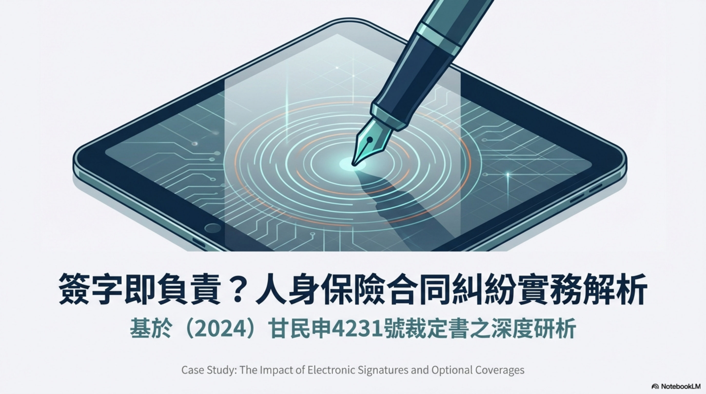
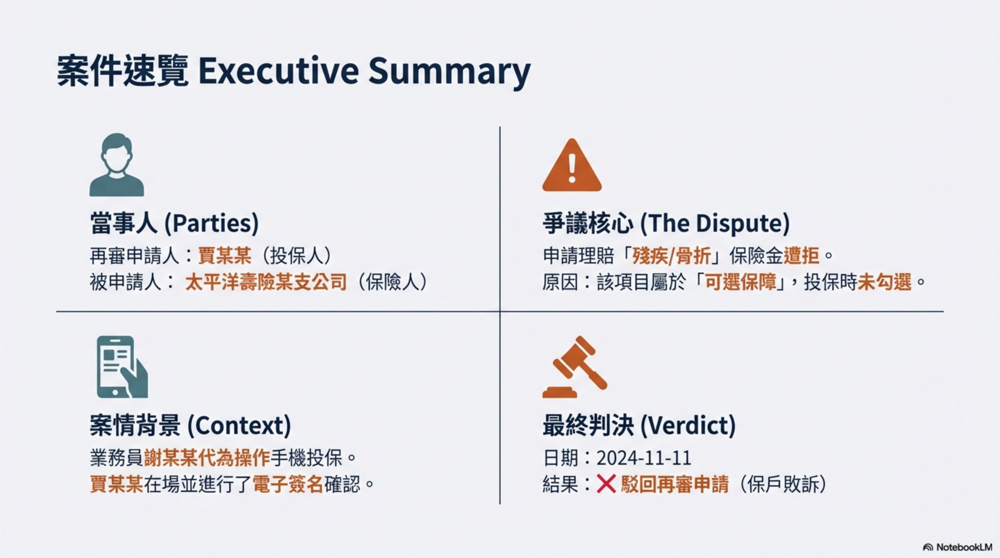
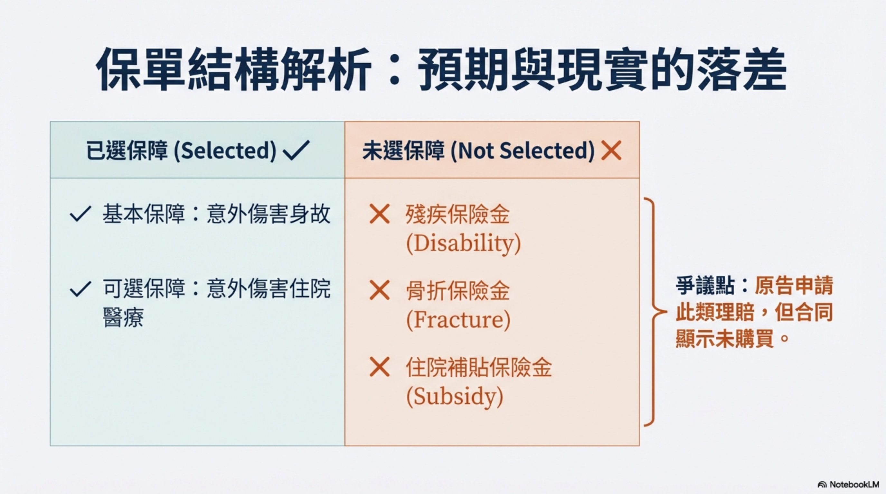
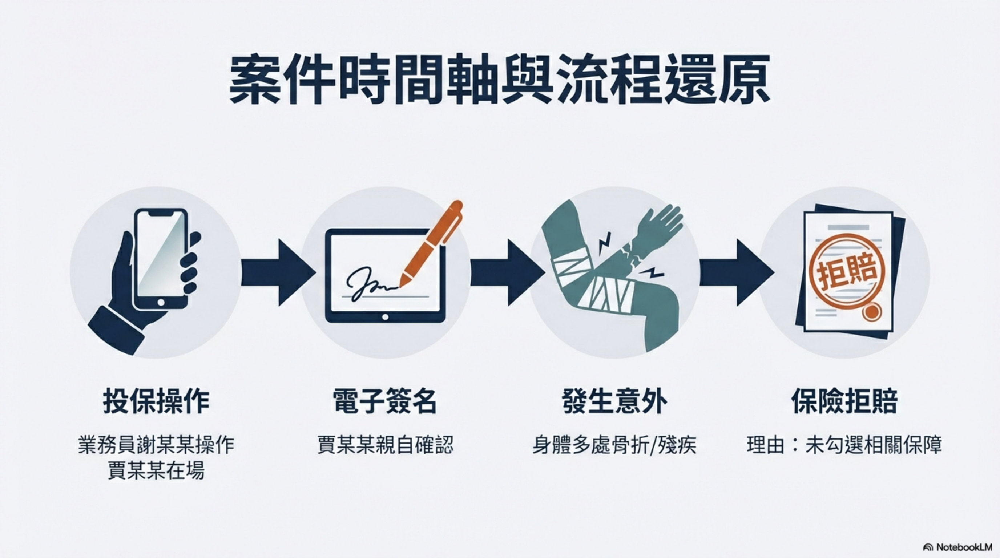
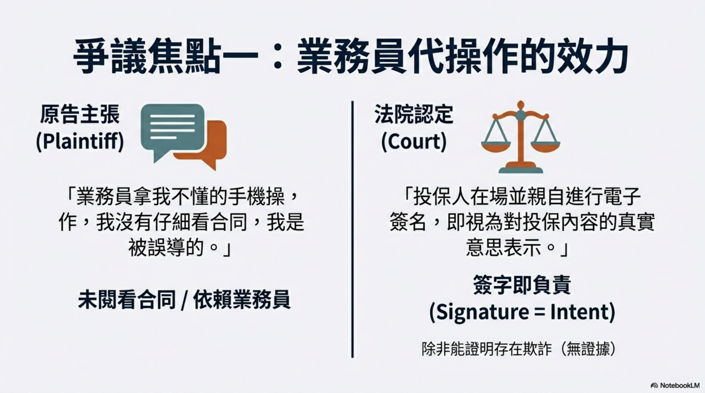
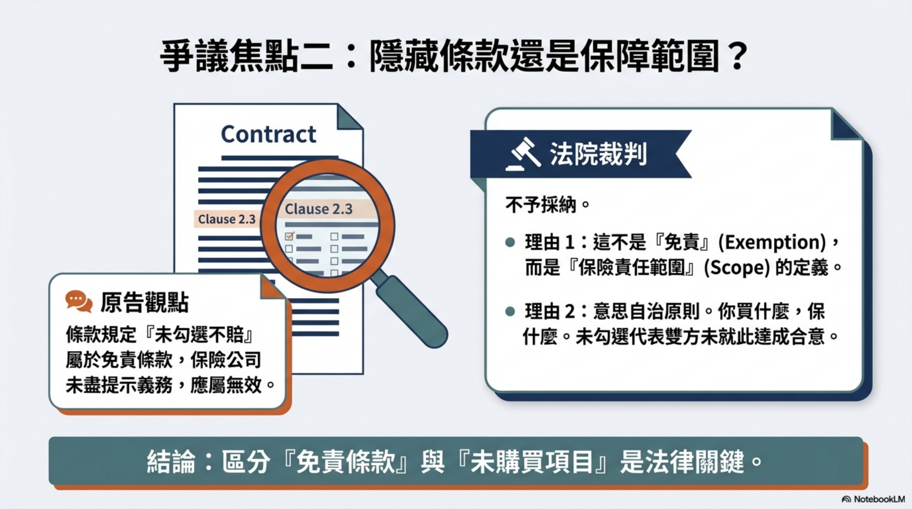
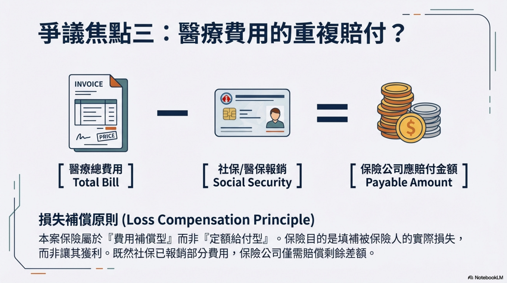
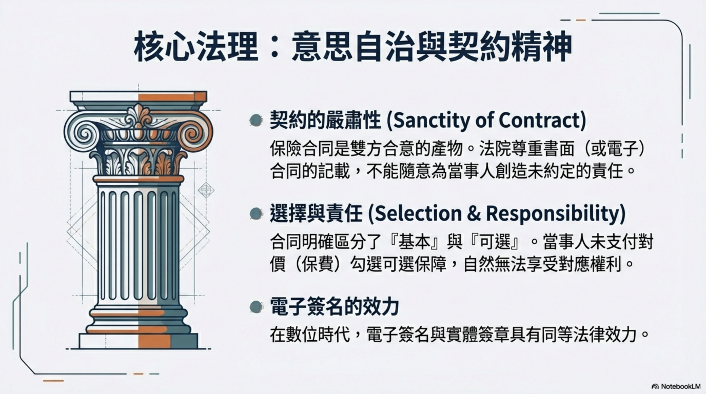
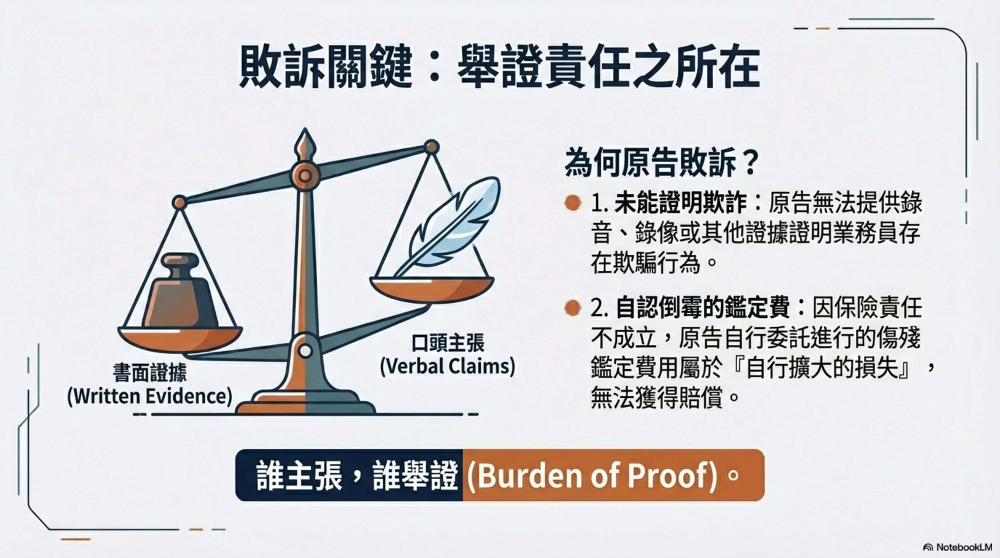
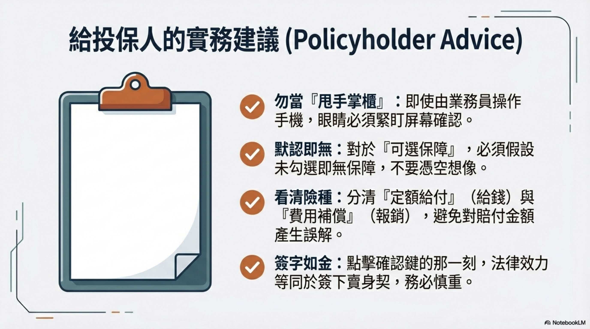
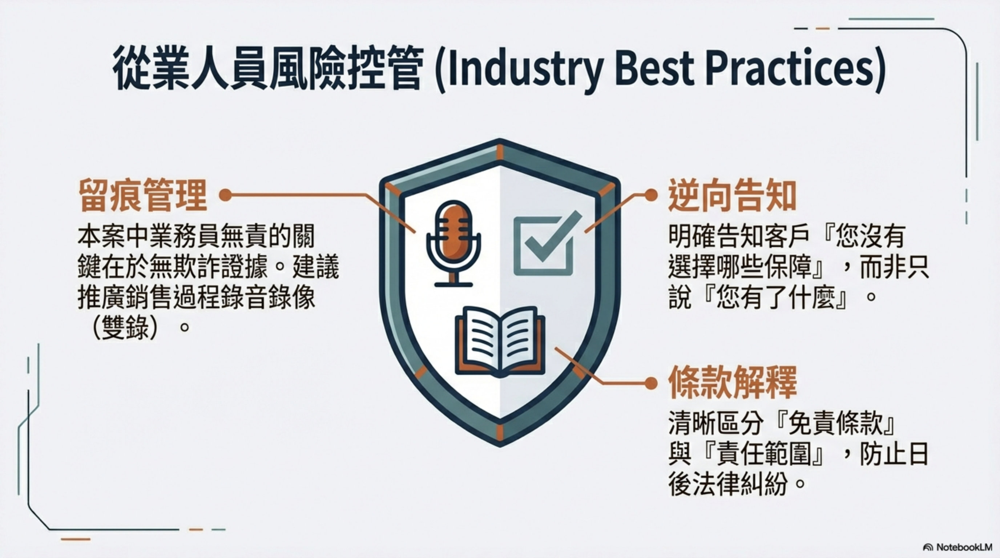
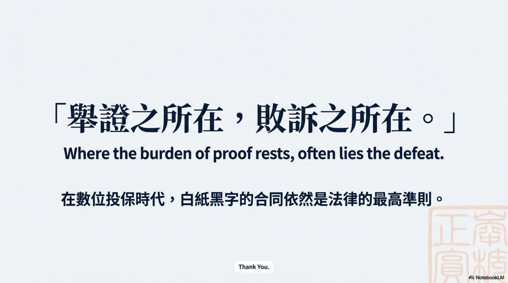
人身保險合同糾紛民事審判監督民事裁定書
基本資訊
| 項目 | 內容 |
|---|---|
| 案號 | （2024）甘民申4231號 |
| 案由 | 人身保險合同糾紛 |
| 審理法院 | 甘肅省高級人民法院 |
| 審理程序 | 民事審判監督（再審審查） |
| 裁判日期 | 2024-11-11 |
| 當事人 | 賈某某 vs 中某公司（太平洋壽險某支公司） |
| 結果 | ❌ 保戶敗訴 — 駁回再審申請 |
案情摘要
賈某某購買個人意外傷害保險，保險合同分為「基本保障」和「可選保障」。投保時由業務員謝某某在賈某某手機上操作投保，保險單顯示： - 基本保障：意外傷害身故 - 已選可選保障：意外傷害住院醫療 - 未選可選保障：殘疾保險金、骨折保險金、住院補貼保險金
賈某某發生意外後，要求保險公司賠付殘疾保險金、骨折保險金、住院補貼保險金及全額醫療費，保險公司以「未選擇該可選保障」為由拒賠。
賈某某的五大抗辯（全部被駁回）
| 抗辯 | 法院態度 |
|---|---|
| 1. 業務員代操作投保，未讓其閱看合同，未說明「可選保障需勾選」 | 現有證據不足以證明業務員存在欺騙行為；賈某某在場且簽字確認，視為真實意思表示 |
| 2. 合同第2.3條（可選保障需投保時選擇才承擔給付責任）實質為免責條款 | 不採納。法院認為保險合同適用意思自治原則，保險責任取決於合同約定 |
| 3. 投保單將「意外傷害殘疾」列入基本保障欄，應按投保單為準 | 保險單明確顯示基本保障為意外傷害身故，可選保障為住院醫療，未選其他 |
| 4. 住院醫療費應全額賠付，不應扣除醫保報銷部分 | 該保險屬費用補償性保險，適用損失補償原則；業務員錄音中也稱已告知報銷規則 |
| 5. 二審未組織調解即判決，程序違法 | 保險公司明確表示不同意調解，不存在程序違法 |
法院裁判理由
核心認定：合同約定明確，保戶未選擇的可選保障無賠付依據
- 意思自治原則：保險合同為當事人合意產物，保險人是否承擔責任取決於合同約定
- 代填視為本人意思：業務員代為填寫投保單，經賈某某簽字確認 → 視為投保人真實意思表示
- 舉證不足：賈某某未能證明業務員存在欺騙行為
- 費用補償原則：住院醫療保險屬費用補償型，已從醫保獲得補償的部分不重複賠付
- 鑑定費自擔：保險公司無殘疾賠付義務，賈某某自行鑑定的費用屬自行擴大的損失
實務啟示
| 要點 | 說明 |
|---|---|
| ❌ 可選保障未勾選 = 無賠付依據 | 合同明確區分基本保障和可選保障，未選擇的項目保險公司無需賠付 |
| ❌ 業務員代操作 + 本人簽字 = 視為本人意思 | 即使業務員代為操作投保，只要投保人在場並簽字確認，即視為真實意思表示 |
| ❌ 費用補償型保險適用損失補償原則 | 已從醫保獲得報銷的部分，保險公司不重複賠付 |
| ⚠️ 「可選保障條款」vs「免責條款」 | 法院傾向認為可選保障的約定屬於保險責任範圍條款，而非免責條款 |
| 💡 投保時務必確認所有保障項目 | 電子投保時應逐項確認基本保障和可選保障的勾選情況 |
對保戶諮詢的指導意義
- 投保時：必須親自確認投保單上所有保障項目的勾選情況，不要完全依賴業務員操作
- 簽字前：確認保險單載明的保障項目與自己的理解一致
- 業務員代操作：如果業務員代為操作，務必要求其逐項解釋每個保障項目
- 費用補償型保險：了解醫療保險的報銷規則，已從醫保獲得的部分通常不重複賠付
- 本案教訓：即使業務員有過錯，如果無法舉證證明欺騙行為，簽字確認後仍難以推翻合同內容